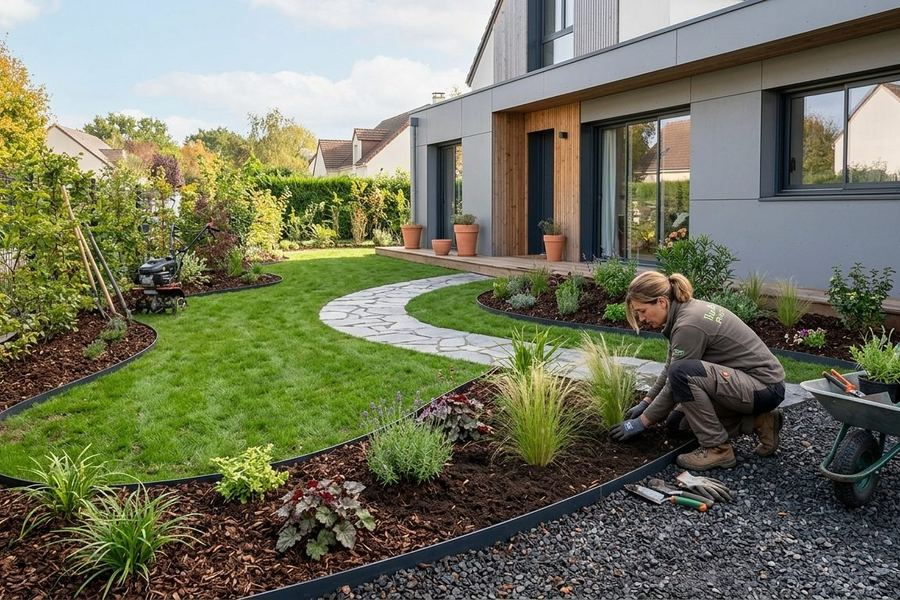
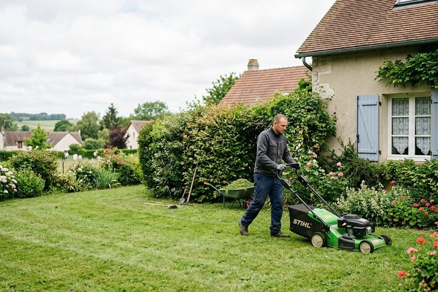

01
Création et aménagement
Conception et aménagement de vos espaces verts, selon votre terrain et vos envies.
En savoir plus →Nos prestations
Campos Jardinage intervient à Versailles (78) pour vos espaces verts. Décrivez votre besoin, nous vous répondons.
Nos prestations
Un seul interlocuteur pour vos espaces verts.

Conception et aménagement de vos espaces verts, selon votre terrain et vos envies.
En savoir plus →
Entretien régulier de vos espaces verts, pour un jardin soigné toute l’année.
En savoir plus →Notre méthode
Un interlocuteur unique, de la demande à la réalisation.
Vous décrivez votre projet ou vos besoins, par téléphone ou par formulaire.
Nous vous répondons pour établir un devis adapté à votre espace vert.
Les travaux sont réalisés, ou l’entretien est planifié selon votre demande.
Contact
Appelez-nous ou écrivez-nous : nous revenons vers vous pour établir un devis.
© Campos Jardinage · Maquette de démonstration